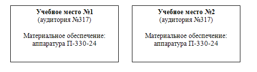

Тема №4. Выполнение нормативов и учебных задач на средствах связи
Занятие №3. Выполнение нормативов на аппаратной П-258-24К.
Учебные вопросы:
Компьютерные программы, наглядные пособия и технические средства обучения:
МЕРЫ БЕЗОПАСНОСТИ ПРИ РАБОТЕ НА АППАРАТУРЕ
Личный состав, работающий на аппаратуре, подвергается опасности. Источниками опасности на аппаратуре являются высокие напряжения. Следовательно, при работе курсантам необходимо соблюдать осторожность и строго выполнять правила техники безопасности.
Запрещается:
- без разрешения преподавателя производить включение электропитания на главном распределительном щите;
- самостоятельно включать электропитание аппаратуры;
- включать электропитание аппаратуры без предварительной проверки заземления;
- самостоятельно производить замену предохранителей на аппаратуре;
- самостоятельно выдвигать блоки и снимать предохранительные щиты аппаратуры;
- пользоваться неисправными приборами.
В случаях обнаружения неисправностей аппаратуры, измерительных приборов или проводов необходимо немедленно сообщить об этом руководителю занятия.
При поражении электрическим током необходимо немедленно отключить электроустановку или отделить пострадавшего от токоведущих частей, оказать ему первую медицинскую помощь, доложить преподавателю и вызвать врача.
Условия выполнения учебных нормативов и учебных задач.
При отработке (проверке выполнения) нормативов необходимо руководствоваться следующим:
- нормативы отрабатываются на исправных технике и вооружении, которые должны быть полностью укомплектованы инструментом, принадлежностями и приспособлениями, уложенными и закрепленными на своих местах;
- инструмент и приспособления, используемые при выполнении нормативов, перед укладкой должны быть расконсервированы (очищены) и протерты;
- перед выполнением нормативов, связанных с запуском двигателя, при температуре воздуха +50С и ниже двигатель должен быть предварительно прогрет в соответствии с требованиями инструкции по его эксплуатации;
- нормативы считаются выполненными, если при их отработке были соблюдены условия выполнения и не допущены нарушения требований правовых актов Министерства обороны, а также техники безопасности;
- если при отработке норматива обучаемым допущена хотя бы одна ошибка, которая может привести к травме, поломке техники, вооружения или к аварии, выполнение норматива прекращается и оценивается "неудовлетворительно";
- за нарушение последовательности выполнения норматива, которое не приводит к травме, аварии, поломке (порче) техники и вооружения, а также за каждую ошибку, оговоренную в условиях выполнения норматива (в руководстве, наставлении, технической карте), оценка снижается на один балл.
Перед началом выполнения учебных задач (нормативов) руководитель занятий (проверяющий) проверяет у обучаемых знания условий выполнения задач, соблюдение мер безопасности, основных требований по безопасности связи и эксплуатации техники связи и АСУ и др.
Если обучаемый показал неудовлетворительные знания по указанным разделам, то он к выполнению учебной задачи не допускается и оценивается по специальной подготовке «неудовлетворительно».
Простейшие неисправности, возникшие в аппаратуре в процессе выполнения учебной задачи (норматива), устраняются обучаемым, при этом, если неисправность произошла по вине обучаемого, то время, затраченное на ее устранение, не компенсируется и добавляется ко времени выполнения учебной задачи (норматива). Общая оценка выставляется по суммарному времени. При возникновении неисправности по другим причинам обучаемый допускается к повторной работе.
Норматив или учебная задача считаются выполненными, если при работе соблюдены условия их выполнения, полностью и в установленный срок выполнен предусмотренный объем работ и при этом не были нарушены требования по безопасности связи и технике безопасности.
Выполнение норматива или учебной задачи прекращается, а военнослужащему выставляется неудовлетворительная оценка, если им допущено хотя бы одно из следующих нарушений:
- правил техники безопасности, угрожающих здоровью и жизни его самого или других лиц;
- правил инструкций по развертыванию и эксплуатационному обслуживанию станций, линий связи, аппаратуры и механизмов, которые привели к выходу из строя аппаратуры;
- грубые нарушения безопасности связи (1 и 2 категорий).
Оценка за выполнение норматива военнослужащим (подразделением) определяется:
- «отлично», если военнослужащий (подразделение) выполнил норматив (задачу) правильно, в полном объеме, с соблюдением всех условий выполнения и технологической последовательности операций; действовал уверенно; выполнил норматив (задачу) по времени на оценку «отлично»;
- «хорошо», то же что и на «отлично», однако военнослужащий (подразделение) при этом допустил не более одной ошибки в последовательности выполняемых операций и выполнил норматив по времени на оценку «хорошо»;
- «удовлетворительно», если военнослужащий (подразделение) выполнил норматив (задачу) по времени на оценку не ниже «удовлетворительно» и при этом допустил не более двух ошибок в последовательности выполнения операций;
- «неудовлетворительно», если военнослужащий (подразделение) при выполнении норматива (задачи) не проделал всех установленных операций или допустил более двух ошибок в последовательности их выполнения, или не уложился по времени на оценку «удовлетворительно».
Нормативы по работе на средствах связи
| № норматива | Наименование норматива | Объем выполняемых работ | Оценка | Время |
|---|---|---|---|---|
| 34. | Подготовка к работе аппаратуры П-330-24 | Произвести внешний осмотр аппаратуры. Включить питание. Проверить напряжение источника питания и уровни токов контрольных и несущих частот. Проверить работоспособность аппаратуры «на себя» | Отлично Хорошо Удовл |
9 мин 11 мин 13 мин |
| 35. | Включение в линию аппаратуры П-330-24 и настройка линии, состоящей из двух оконечных станций | Подключить к аппаратуре линию. Отрегулировать канал служебной связи. Настроить оконечное оборудование линейного тракта и отрегулировать остаточное затухание шести каналов ТЧ (по три в каждой группе) и проверить прохождение разговора и вызова по ним | Отлично Хорошо Удовл |
12 мин 14 мин 16 мин |
Схема организации учебных мест при проведении занятия
